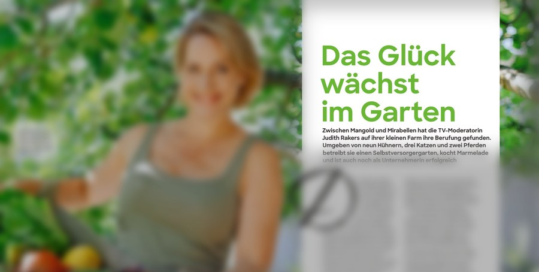
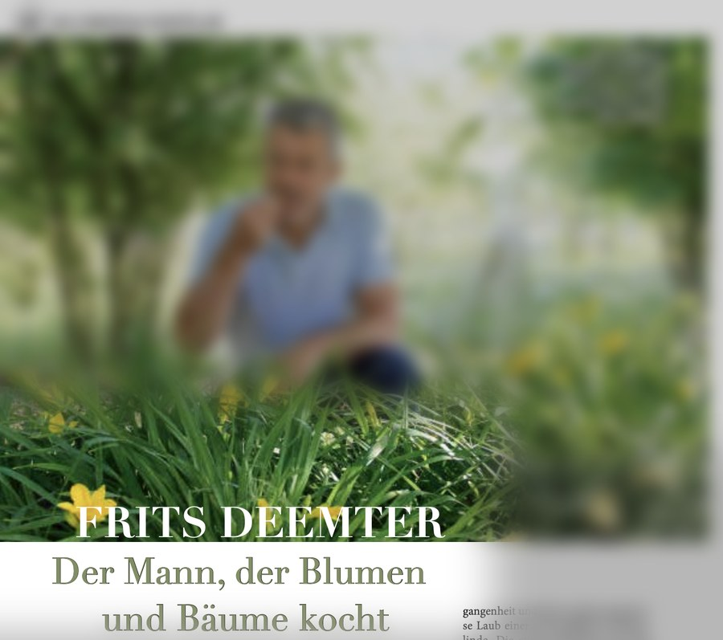
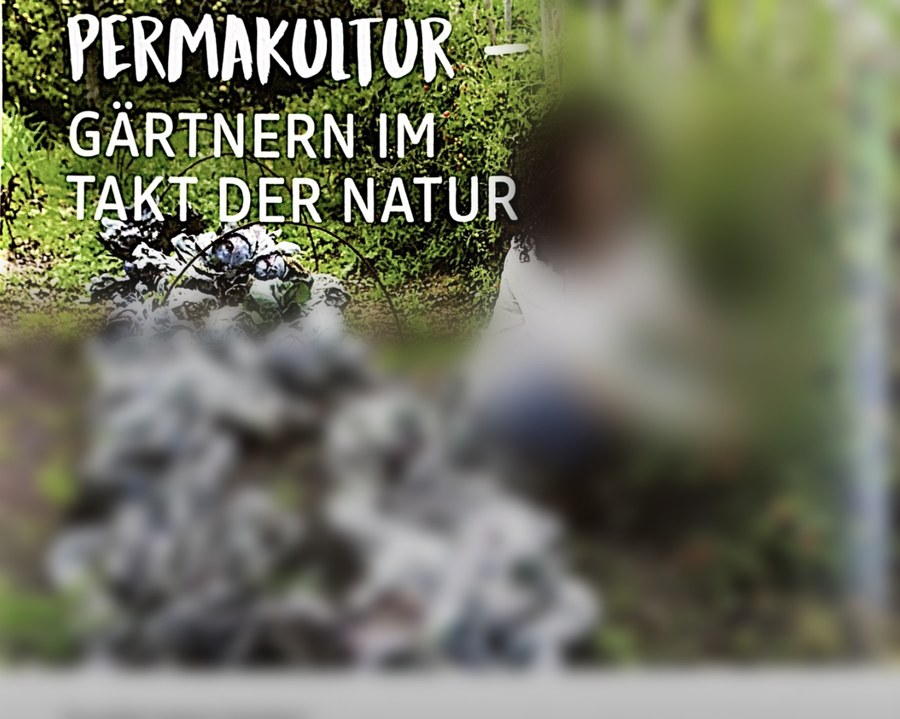
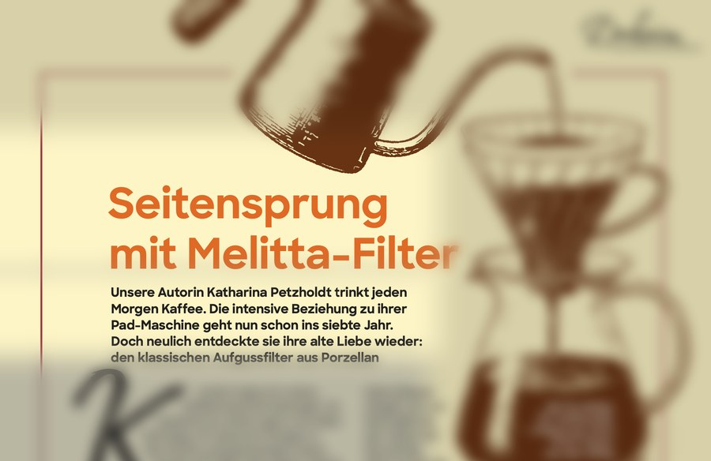

Freie Autorin für Porträts, Gartenratgeber und Kolumnen
Texte mit Charme und Substanz
Print und Online · Für Redaktionen, Agenturen und Unternehmen
Was ich anbiete
Porträts, die Träume und Brüche eines Menschen so klar herausdestillieren, dass aus einem Text eine Begegnung wird.
Ratgebertexte rund ums nachhaltige Gärtnern, die Wissen greifbar machen und Lust aufs Loslegen wecken. Von der Anzucht auf der Fensterbank bis zur Gestaltung naturnaher Gärten.
Kolumnen, die im Beiläufigen etwas Größeres entdecken und den Leser mit einer neuen Perspektive und einem Augenzwinkern entlassen.
Ausgewählte Texte
Porträts

Vorschau · Frau im Leben / Daheim
Frau im Leben / Daheim—Vierseitiges Porträt—Ausgabe 6/25
Judith Rakers — Das Glück wächst im Garten
Der hölzerne Klappstuhl steht mitten auf der Weide, auf dem Schoß liegt der Laptop, und zwei Pferde, die ihr hin und wieder über die Schulter blicken, verteilen etwas Stroh auf der Tastatur: Judith Rakers mag solche unkonventionellen Arbeitsplätze.“
Vollständiger Artikel als PDF auf Anfrage erhältlich

Vorschau · kraut & rüben
kraut & rüben—Vierseitiges Porträt—Ausgabe 9/19
Frits Deemter — Der Mann, der Blumen und Bäume kocht
Die Neugier war zu groß. Frits Deemter wartete bis es dunkel war und kletterte über den Zaun in den Garten des Bürgermeisters. Dort, nahe der französischen Kleinstadt Sisteron, blühte gerade eine Magnolia grandiflora.“
Vollständiger Artikel als PDF auf Anfrage erhältlich
Streng genommen ist die Schließung von Humanilog der größte Wunsch von Benjamin Brich und seinen Kollegen. Für Menschen, die in der Logistikbranche tätig sind, ist das ein ungewöhnliches Ziel. Für eine humanitäre Organisation wie Humanilog – auch als Humanitarian Logistics Organisation (HLO) bekannt – ein folgerichtiges.“
Ratgeber- und Servicetexte rund ums (nachhaltige) Gärtnern

Vorschau · alverde Magazin
alverde—Zweiseitiger Magazinbeitrag—Ausgabe 4/22
Permakultur — Gärtnern im Takt der Natur
Permakultur ist einer der großen Gartentrends. Kein Wunder, denn das Konzept liefert Antworten auf die Sehnsüchte vieler Menschen. Wer nach ihren Grundlagen und Prinzipien gärtnert, fördert Artenvielfalt, schont Ressourcen, schafft eine Rückverbindung mit der Natur.“
Vollständiger Artikel als PDF auf Anfrage erhältlich
Online-Artikel · myHOMEBOOK
myHOMEBOOK—Servicetext—26.02.2026
5 DIY- und Upcycling-Ideen für die Anzucht von Pflanzen
Für viele Gärtner beginnt die Gartensaison auf der Fensterbank — mit der Anzucht von Gemüse, Blumen und Kräutern. Wer ohne gekaufte Anzucht-Utensilien auskommen möchte, findet im Gelben Sack oder im Altpapier nützliche Helferchen.
Eicheln werden selten als Lebensmittel wahrgenommen. Ihr Platz ist der Boden unter den Bäumen, nicht die Küche. Ein Blick in Geschichte und Forschung rückt diese Einschätzung zurecht.“
ITJ (Internationales Transport Journal)—Kolumne—07.06.2024
Der Rest ergibt sich
„Wege entstehen dadurch, dass man sie geht.“
Franz Kafka (1883–1924), Autor unter anderem von „Die Verwandlung“, „Das Urteil“
Jeder Trampelpfad offenbart einen Irrtum. Denn egal wie ausgeklügelt das Wegenetz im öffentlichen Raum auch ist: Wenn die vorhandenen Wege den Bedürfnissen der Menschen nicht gerecht werden, dann suchen sich die Menschen ihre eigenen.“
So entstehen Trampelpfade. Meist sind es Abkürzungen, die von A nach B führen. Manchmal direkt neben den offiziellen Wegen und manchmal quer durchs städtische Grün.
Gestalter des öffentlichen Raums begegnen dieser Realität gelegentlich mit einer reaktiven Planung. In den 1970er-Jahren machte der Wiener Architekt Christopher Alexander vor, wie das geht. Er war mit der Campus-Gestaltung der Universität von Oregon beauftragt. Statt die Wege auf dem Gelände am Schreibtisch zu planen, liess er die Studenten und Angestellten der Uni „mit den Füssen abstimmen". Auf dem neu zu gestaltenden Gelände säte er zunächst Rasen. In der darauffolgenden Zeit beobachtete er, wo sich Trampelpfade im Gras bildeten. Diese Pfade wurden befestigt und bildeten so das Wegesystem der Uni, das sowohl der Intuition als auch den Bedürfnissen der Menschen entsprach.
So wörtlich wie bei dieser kleinen Geschichte hat Franz Kafka das ihm zugeschriebene Zitat „Wege entstehen dadurch, dass man sie geht" kaum gemeint, aber der Grundgedanke wird hier sehr klar: Handlungen formen die Realität. Oftmals meinen wir, dass wir erst den perfekten Plan bräuchten, um ins Handeln zu kommen. Doch manchmal sind erste Schritte als Sprungbrett genug. Es kann ausreichen, die Stellenanzeigen durchzublättern, wenn man unzufrieden ist mit seinem Job. Die ersten Vokabeln zu pauken, wenn man eine neue Sprache erlernen möchte. Oder zügige Spaziergänge zu machen und Lichtschalter nur noch mit den Füssen zu bedienen, wenn man fitter und sportlicher werden möchte. All diese kleinen Schritte können eine Richtung setzen und Wege eröffnen.
Wenn sich unterwegs jedoch die Umstände oder die eigenen Wünsche ändern, kann ein Richtungswechsel nötig werden. Eine Bekannte von mir hängte ihren Bürojob an den Nagel, um in einer verschlafenen Kleinstadt einen Unverpackt-Laden mit angehängtem Café zu eröffnen. Als immer deutlicher wurde, dass das Umweltbewusstsein der Kleinstädter nicht ausreichte, um den Laden am Laufen zu halten und auch die Touristen, die im Sommer das Städtchen schwemmten, das Unternehmen nicht aus der Misere rausreissen konnten, schwenkte die Betreiberin um. Sie beschränkte sich auf den Café-Betrieb und baute ihn aus.
Ganz ohne Richtungswechsel schuf sich mein Teenager-Sohn seinen eigenen Weg durch die Wirrungen des Lebens. Er hat vor etwa zwei Jahren sein dauerchaotisches Zimmer aufgeräumt. Er mistete den Kleiderschrank aus, verbannte die letzten Kuscheltiere, leerte seinen Schreibtisch. Man hätte meinen können, dass diese Ordnung von kurzer Dauer sein würde. War sie aber nicht. Sie war ein Anfang von etwas Neuem. Ein paar Tage später richtete er für jedes Schulfach eine eigene beschriftete Ablage ein und fing an, direkt nach der Schule seine Hausaufgaben zu machen und die Schultasche für den nächsten Tag zu packen. Seither liegt bei ihm nichts mehr herum, sein Bett ist immer gemacht und seine Angelzeitschriften liegen fächerförmig ausgebreitet auf seinem kleinen Beistelltisch neben dem Sitzsack. Sein Zimmer ist seitdem der ordentlichste Raum im Haus.
Das initiale Aufräumen war der erste Schritt auf einem Weg zu einem Ziel, das gar nicht definiert war. Er wollte nicht irgendwo hin, sondern nur von etwas weg.
«Aus dem Leben» – neue Autorin Katharina Petzholdt hat als Teenager in einem kleinen Kästchen Wörter, Formulierungen und Ideen gesammelt. Daraus schöpft die freie Autorin mitunter noch heute, wenn sie über Menschen, Meinungen und das Leben schreibt.

Vorschau · Frau im Leben / Daheim
Frau im Leben / Daheim—Kolumne—Ausgabe 02/26
Seitensprung mit Melitta-Filter
Kürzlich habe ich meine Kaffeemaschine betrogen. Es passierte an einem ganz normalen Samstag. Ich stand am Morgen in der Küche und betrachtete meine Senseo HD 7865. Seit sieben Jahren drücke ich täglich sanft ihren roten Knopf und freue mich dann über das gleichmäßige Brummen, während sie mir den Kaffee macht. Doch an diesem Morgen war alles anders.“
Ich musste plötzlich an den letzten Besuch bei meiner Mutter denken. Sie hatte mir einen Kaffee angeboten, den sie wie immer von Hand aufgoss. Und ich ertappte mich dabei, wie ich fasziniert den Vorgang beobachtete: das zögerliche Rinnen des Kaffees durch den Filter in die Kanne, der Duft, das Warten. Da war plötzlich eine feine Sinnlichkeit, die ich in meinem effizienz-getriebenen Alltag nur selten finde.
Also drückte ich an diesem Samstag nicht meine Senseo, sondern ging in den Keller. Zwischen Raclette-Ofen, alten Tassen und leeren Marmeladengläsern fand ich ihn: meinen ausgemusterten weißen Porzellanfilter von Melitta. Daneben die passende Kanne. Ich spülte beides ab und stellte den Wasserkocher an. Während das Wasser heiß wurde, erinnerte ich mich daran, wie selbstverständlich ich früher so jeden Morgen Kaffee gemacht hatte. Heute fühlt sich der Aufguss per Hand wie ein kleiner Luxus an, gerade weil er so viel Zeit kostet.
Langsam goss ich das Wasser über das Kaffeepulver, in kleinen Kreisen. Das Wasser zog an den Rändern der Filtertüte hoch, kleine Blasen stiegen auf, am Rand glänzte der nasse Kaffee dunkel, dann wurde die Oberfläche wieder ruhig. Es war fast wie eine kurze Meditation. Neben mir auf der Arbeitsplatte stand die Senseo ungenutzt und ziemlich vorwurfsvoll da. So als wollte sie sagen: „Ich hätte mit meinen 45 Düsen den Kaffee in 30 Sekunden gemacht!" War für mich und die HD 7865 jetzt das verflixte siebente Jahr gekommen?
Als mir aus dem Porzellan-Filter der Duft von frischem Kaffee in die Nase stieg, musste ich lächeln. Der Filterkaffee schmeckte wunderbar, aber es ging um mehr als den Genuss – nämlich um das kleine Wunder, das entsteht, wenn man sich Zeit lässt. Nicht alles wird besser, nur weil es schneller geht. Meine Senseo mit ihren Pads darf bleiben. Aber meine Kaffee-Liebe muss sie sich ab sofort mit dem schneeweißen Porzellan-Filter teilen.